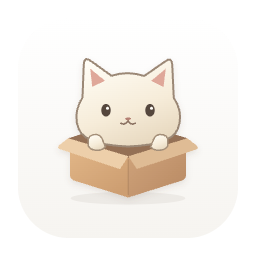

先用气泡
短回复、LoL 点评、简单来信贴在角色身边。微信来信显示发件人和正文，并在语音空档主动播报。免打扰群保持安静，原文可在微信历史查看。
交互设计稿。用 BoxAgent 吉祥物和模拟消息演示小窗、任务状态和贴边陪玩控制。
桌宠小窗 360 × 300 点
以下按钮模拟用户和书书的动作。无触屏硬件可直接说话，需要打字时用电脑键盘。
书书停在桌面原位，保留人物与脚下状态。
短回复、LoL 点评、简单来信贴在角色身边。微信来信显示发件人和正文，并在语音空档主动播报。免打扰群保持安静，原文可在微信历史查看。
说「展开聊天」、查看历史或开始打字时展开。日常长回复需要对照阅读时可临时展开。陪玩时保留游戏焦点，完整对话在用户要求查看或需要确认时才展开。
说话、输入文字、有未发送草稿、翻看历史或等待确认时暂停收窗。说「先留着」可以固定当前小窗，随时说「收起聊天」。
播报结束且没有保留条件时开始计时。桌宠先试 20 秒，硬件先试 12 秒。长回复按文字量延长。收窗后对话和任务继续，进度回到书书脚下。
你开口时先听你，再回答。微信在下一次空档主动报，已起播的来信留在对话里。LoL 短评只在仍应景时开口。任务进展更新灵动岛或脚下状态，聊天保持当前状态。
语音和陪玩可从 Mac 菜单栏打开。游戏边缘点头像才展开或收回控制。关麦、静音游戏短评都保持控件展开。完整人物和对话在桌面或硬件屏上，硬件可通过语音查看来信与确认回复。
| 形态与模式 | 小窗收起 | 小窗展开 |
|---|---|---|
| 桌宠 · 日常 | 角色原地做动作，任务状态在脚下。桌面空白可操作。 | 360 × 300 点试用，窗口随角色移动。保留文字输入、工具栏和任务灵动岛。 |
| 桌宠 · 陪玩 | 人物留在桌面，短对话贴着人物。游戏边缘只探出半个头像。 | 仍是同一个桌宠小窗。在桌面查看聊天、确认和输入，游戏边缘保留头像入口。 |
| 硬件 · 日常 | 雾紫舞台留给书书走动，短气泡跟随角色。脚下显示当前状态。 | 聊天靠右，约半屏宽且至多八成屏高。角色全身留在一侧。 |
| 硬件 · 陪玩 | 人物和来信正文留在硬件屏，游戏主屏只露贴边头像。 | 硬件屏展示完整对话、待确认正文和任务状态。语音操作期间游戏保持焦点。 |
